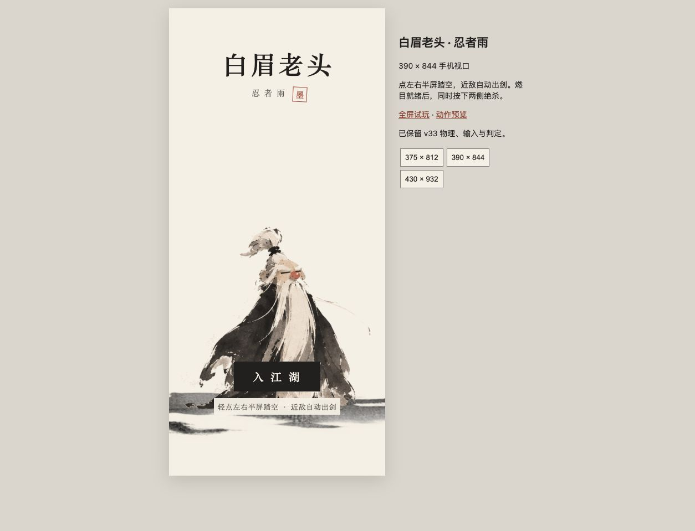
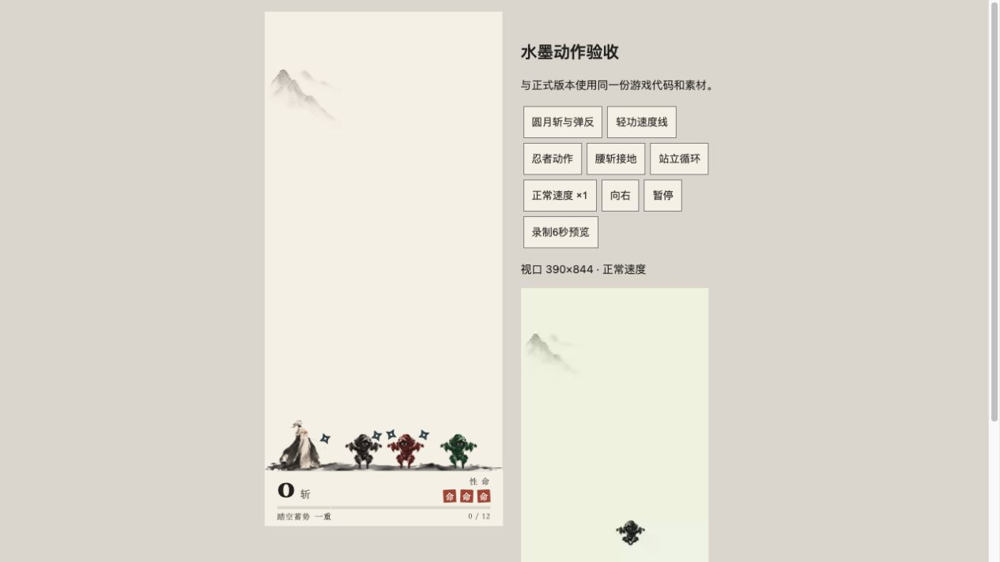

水墨 Studio 独立升级版 · 2026年10月19日
完整可玩版本已交付。36项自动化测试 + 17项实际浏览器测试通过。
正式游戏未覆盖。173个冻结源文件校验值未变化；新工程直接复用已确认的上升、下落、持剑三帧及现有站立三帧。
| 项目 | 结果与证据 |
|---|---|
| Game Studios | 找到并校验历史 Claude-Code-Game-Studios-Codex：73技能、49角色定义。实际执行 adopt、art-bible、asset-spec、asset-audit、consistency-check，并启动技术、美术、UI三个专业子任务；QA角色顺序执行。执行记录区分工作流、图像工具与代码，不声称调用独立Studio编辑器。 |
| 水墨忍者 | 一个真实水墨母版、一次局部修正；同源像素拆分与变换，三色同结构。42张RGBA独立PNG、15张Sheet；空中、巡逻、空投、地投各3帧，死亡上下半身独立。新角色为内部候选，等待用户最终美感判断。 |
| 圆月斩 | 真实毛笔栅格笔触的24帧局部生命周期：按角度出生，旧尾先稀释、断裂，前缘继续伸展。第19帧旧尾仅剩自身峰值2.1%，新前缘仍71.7%，不是整体Alpha淡出。半径76、持续0.38秒、旋转和判定不变。 |
| 速度线 | 从真实墨迹纹理展开为短干笔；沿实际速度反方向，最多3条，上升0.29秒内消失，下落更淡。实际画面检查后将起点移到袍摆外侧，不改速度或重力。 |
| 背景 | 暖白底与一侧极淡远山，山层93.53%完全透明；真实干笔地面锚在原碰撞线G+23。背景和地面分层，手机比例变化不移动碰撞。 |
| UI | 题款标题、入江湖入口、90px下方信息带、大斩数、生命朱印、四档蓄势、瞬时称号、结算。隐形触控范围不变；保留原开场、燃目时序、16忍者入场与第一次绝杀教学。 |
| 尸体接地 | 原物理支撑、重力、翻滚、休眠不变；绘制时用实际Alpha凸包补偿图片位置。30种朝向实测像素接地误差最大0.5px；三色6个半身均能稳定休眠。 |
| 检查 | 结果 |
|---|---|
| v33冻结核查 | 14个核心函数逐字节一致，29参数/规则片段一致。见CSV与冻结校验。 |
| 自动化 | 36/36 PASS；包含跳跃/重力、170ms缓冲与取消、190ms双按边界、伤害CCD、弹反无全局无敌、红双投、绿3.1倍、教学、尸体、镜像、剑光局部寿命、速度线方向、390×844/375×812/430×932、90秒持续模拟、100尸体和23忍者场景。原始报告 |
| 实际浏览器 | 17/17 PASS，真实JavaScript与Canvas执行，最终HTML指纹一致。无控制台错误。浏览器测试视口1280×720；手机比例Game View另在390×844 iframe试玩，375×812与430×932检查排版。原始结果 |
| Game View观察 | 正常速度开场→教学→双侧点击绝杀→游戏→17斩结算跑通；实际动态预览弹飞2镖、漏过剑光的镖造成1点伤害。三色巡逻/投镖、正常与慢动作、左右方向均提供可播放预览。手动检查修复了标题说明对比和速度线被袍摆遮挡。 |
| 透明与对齐 | 102张RGBA游戏PNG/Sheet具有真实Alpha；透明外场为0，无烘焙纸色或棋盘格；1张RGB图片明确是浅深底QA预览。82项运行纹理引用完整。忍者三色Alpha同结构、头部锁定、Sheet逐像素对应。 |
| Studio审计 | 资产审计：结构与引用通过，内存预算WARNINGS。一致性：9合同检查通过、0数值冲突；无正式多系统GDD，严格多GDD项标N/A。 |
v33飞镖伤害使用双方相对运动的连续轨迹检测；飞镖弹反使用更新后的端点接触检测。此次保留实际原代码，没有把弹反宣称为连续扫掠。0.17秒窗口允许再次轻功，原剑光计时继续；未擅自改变取消语义。
browser_combat_normal 为实际浏览器Canvas录制（5.97秒，390×844，不含DOM HUD）；其余为60Hz确定性离线渲染。离线影片用于动作观感，不作为手机性能证据。最后速度线偏移修复已更新speed_lines，未改主体的其他影片在manifest中保留原构建来源。


playtest.html为完整自包含游戏，约10.6MB，直接用现代浏览器打开即可，无外网依赖。phone_preview.html为手机尺寸试玩外框；animation_preview.html和qa/qa_browser.html访问子页面接口，建议通过本地HTTP打开。当前本机服务：手机试玩。
assets/frozen 保留旧角色原像素；assets/ninja 为新忍者与Sheet；assets/effects 为24帧剑光、Sheet与速度纹理；assets/background 为透明山与地面。source保存新UI与游戏代码参考，完整运行代码及嵌入资源以playtest.html为准。
胸腹旋转锚：持剑768²画布(401.148,373.589)，人物11FPS；忍者576²锚(288,376)，空中6FPS、巡逻8FPS，投掷由原AI警示/出手时序驱动；运行缓存288²锚(144,188)。水墨剑光512²锚(256,256)，原纹理半径170映射世界76，24帧覆盖0.38秒。
最终HTML SHA256：11b0cebe70e26ad5a39c5459b274fe76723811152d11317a7ab44ea8901aba47